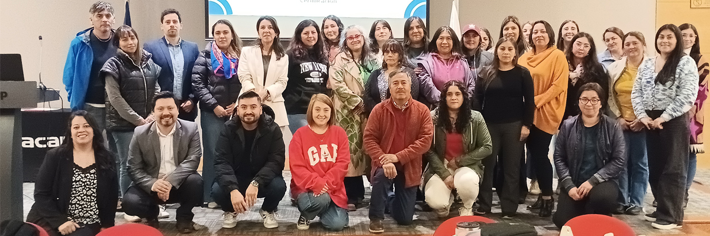

El Inacapino Puerto Montt
La educación es el pasaporte al futuro.
Programa de INACAP y SLEP Llanquihue fortalece la enseñanza de las matemáticas en la región
Puerto Montt, abril 2025. La iniciativa “Innovación Matemática: formación docente para la educación del futuro”, desarrollada por INACAP para el Servicio Local de Educación Pública de Llanquihue (SLEP Llanquihue), consistió en un programa de fortalecimiento de competencias pedagógicas dirigido a docentes de matemáticas y educadores diferenciales del territorio.
La capacitación contempló tres sesiones presenciales de carácter teórico-práctico, con la participación de 40 profesionales, y tuvo como eje central la resolución de problemas como estrategia fundamental para la enseñanza de las matemáticas.
La jornada final del ciclo formativo, realizada el pasado viernes 4 de abril, permitió a los asistentes aplicar los conocimientos adquiridos y se convirtió, además, en un hito significativo para el SLEP Llanquihue, ya que marcó el inicio oficial de la Semana de las Matemáticas. Esta conmemoración, impulsada por el Ministerio de Educación, se desarrollará entre el 7 y el 11 de abril y busca visibilizar el valor de la matemática en el desarrollo integral de los estudiantes.
El encargado de Desarrollo profesional del servicio local de educación pública Llanquihue Diego Velásquez, comentó: “Damos termino a estos talleres focalizados en una estrategia y una metodología innovadora de matemáticas, principalmente en resolución de problemas, este es un trabajo en conjunto que se realizó junto a INACAP, una institución con la que venimos colaborando hace algún tiempo, quienes son nuestros aliados estratégicos y junto a ellos se construyó estos talleres formativos para los funcionarios del servicio local, donde se incluyeron profesores de matemáticas pero también educadores diferenciales promoviendo la diversidad en aula y estregando estrategias completas para estrategias matemáticas establecimientos educacionales de nuestras comunas”.
La profesora de matemáticas del Liceo Ignacio Carrera Pinto de Frutillar, Valentina Cofré, comentó de su experiencia: “esta capacitación nos entregó muchas herramientas enriquecedoras para nuestra labor docente, fueron instancias donde pude abrir mi mente a nuevos conocimientos con respecto a la resolución de problemas y poder integrarlos de mejor manera en el aula. Gracias a este espacio también pude aplicar durante el inicio del año curricular una estrategia distinta de cómo iniciar las clases, donde vi que nuestros estudiantes se motivaron, ya que era diferente la forma de enseñar matemáticas”.
La relatora y docente de Ciencias Básicas de INACAP, Sonia Hernández, nos explicó más acerca de su experiencia como líder de la capacitación: “Hemos terminado la capacitación dirigida a docentes de matemáticas y educadores diferenciales que son parte del SLEP Llanquihue, pudimos implementar y revisar una nueva metodología que es la que se implementa en INACAP la cual se llama Iniciativa Arpa, les mostramos cómo se implementa esta iniciativa, así, con esas herramientas, ellos pueden traspasar este nuevo conocimiento a sus alumnos. Terminamos este ciclo muy contentos ya que sentimos que ellos lograron captar estos conocimientos, y esperamos que dentro del aula ellos puedan implementarlo como una nueva herramienta”.
El cierre de este ciclo de talleres representa un paso significativo en el fortalecimiento de las capacidades pedagógicas, evidenciando cómo la colaboración entre distintas instituciones puede generar un impacto real en la mejora de la enseñanza. Esta sinergia impulsa una educación más innovadora, inclusiva y preparada para responder a los desafíos del futuro.
📸 Momentos Destacados
Una mirada en imágenes a los instantes que marcaron esta jornada inolvidable.
¿Quieres compartir esta noticia en tus redes sociales?
¡Haz clic en tu red favorita y difunde esta buena nueva! 😊